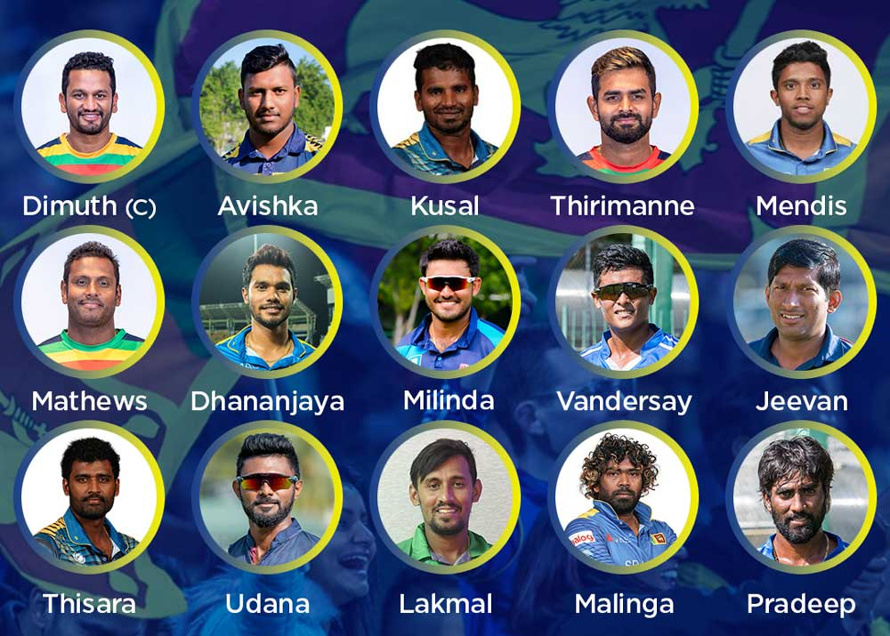
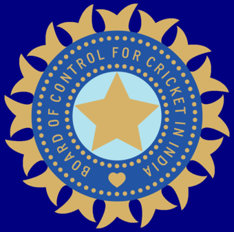
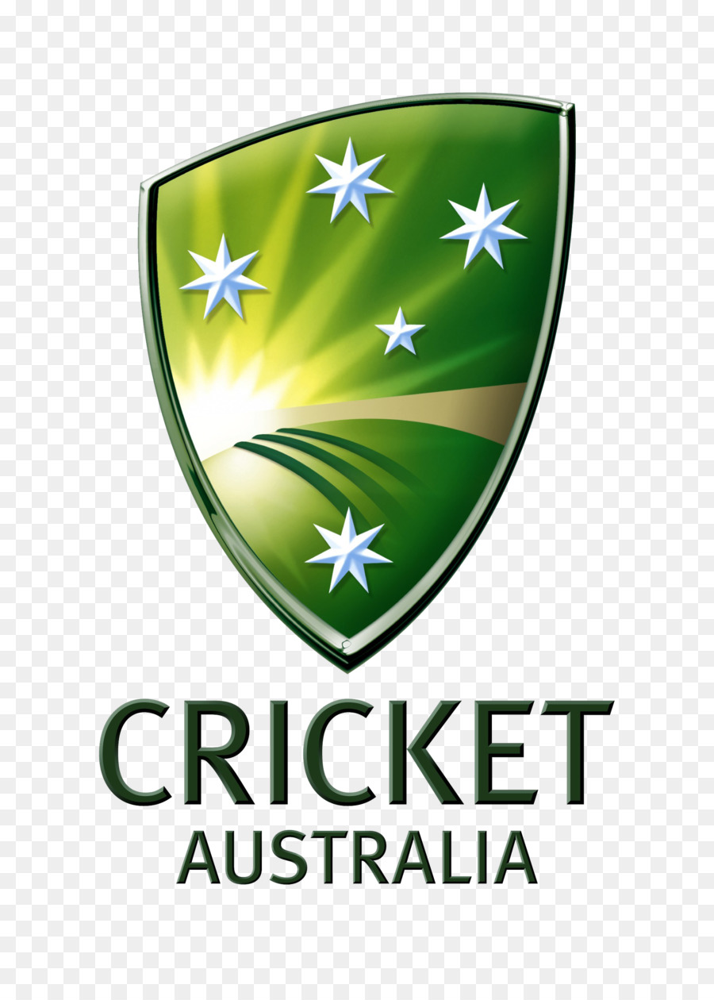
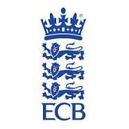

Cricket
Cricket is a sport which is played between two teams of eleven players each who score runs (points). This is done by hitting the ball across the boundary, or by running between two sets of three small, wooden posts called wickets. the wickets are at each end of a rectangle of short grass called 'the pitch'.
Equipment: Cricket Ball, Cricket Bat, Wicket (Stumps, Bails), Various protective equipment
First played: 16th century; South-East England
Highest governing body: International Cricket Council
Team members: 11 players per side (substitutes permitted in some circumstances)
Country or region: Commonwealth
Cricket Teams

Sri Lanka National Team

India National Team

Australia National Team

England National Team